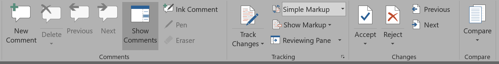

A method of tracking document and code changes over time.

Tracking Changes is not the Answer
Why Not?
Closed-Source - Locked into MS Office
Limited Resuability and Design
Word to Web is Terrible!
Why does this matter to the Humanities? CUZ IT'S SCIENCE!
The tools we use matter!
Affordances
Accessibility
Multiple Content Modes
Open Source - Free (with Caveats)
Easy-to-use - no complex server needed
Collaboration without Tool restriction
Document Management at a Granular Level
Keep track of your documents and sources
Multiple Integrations for Build and Design Tools
What is git?
The Good News!
Compared to earlier tools - Git is pretty easy.
Help is readily available!
GitHub: A set of web-based and desktop designed to make working with git easier.
Collaboration Tools
Comments
Issue Creation
Wiki
Free Website.
Web-Based - but not Open Source
Always keep a backup of your data.
GitHub is vulnerable to take-down requests, censorship, etc.